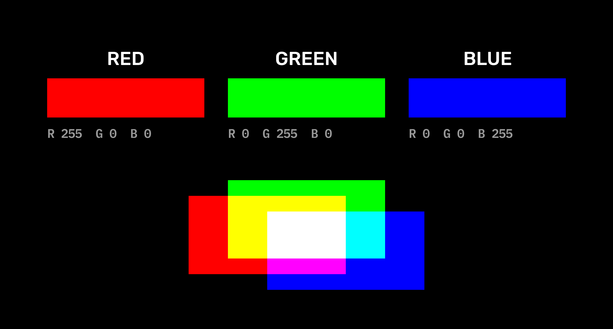
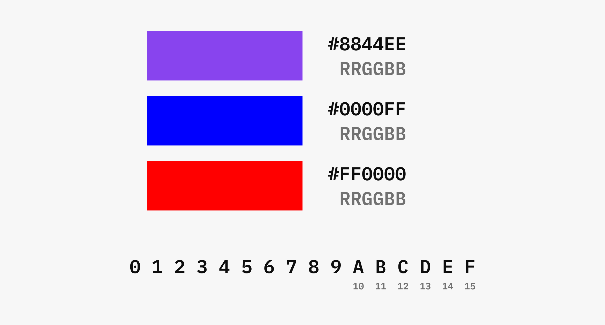
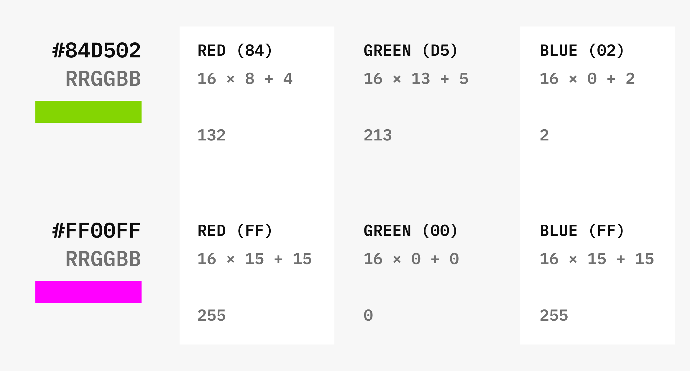
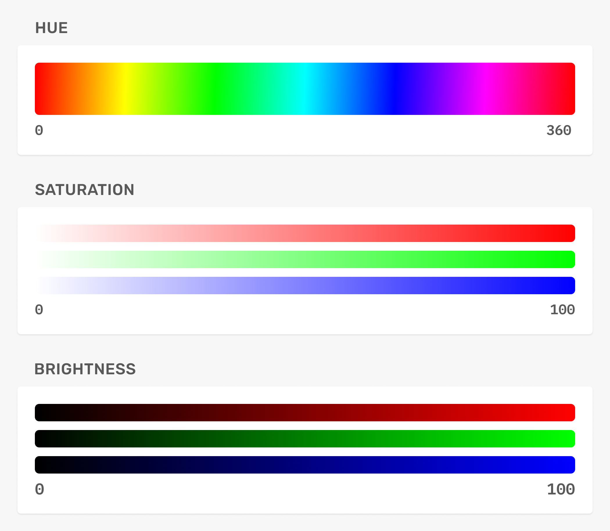

UI Design
Cores
RGB
As telas são compostas por minúsculas "lâmpadas" que emitem as cores vermelha (red), verde (green) e azul (blue). As 3 cores combinadas (aditivas) formam todas as outras possíveis de se ver em uma tela.
Podemos controlar essas cores com valores de 0 a 255, sendo 0 totalmente apagada e 255 totalmente acesa.

Hexadecimal
Formato em código com 16 possíveis valores (hexa) que define o RGB da cor.

Cálculo: multiplicar o primeiro valor por 16 e somar ao segundo.

HSB
Hue (matiz)
A cor, de 0 a 360.
Saturation (saturação)
A intensidade da cor, de 0 a 100
Brightness (brilho)
Preto/branco na cor, de 0 a 100.
